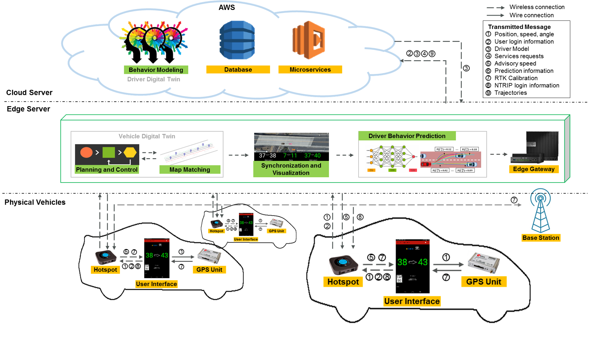

Cyber-Physical Mobility System: Driver Digital Twin
Development of a comprehensive digital twin framework for urban mobility systems, integrating real-time data and AI-driven simulations.
2019 - 2023
UCR
Learn More